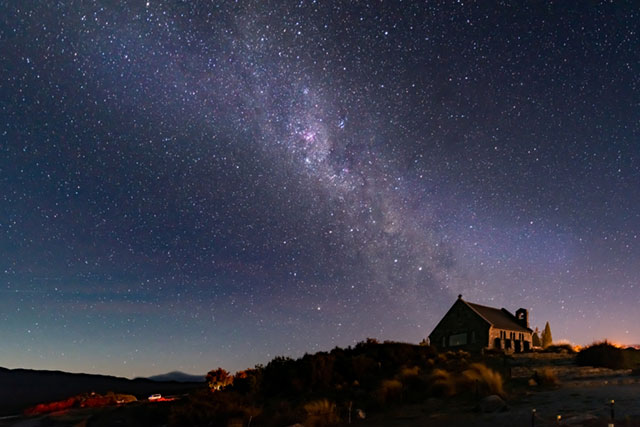
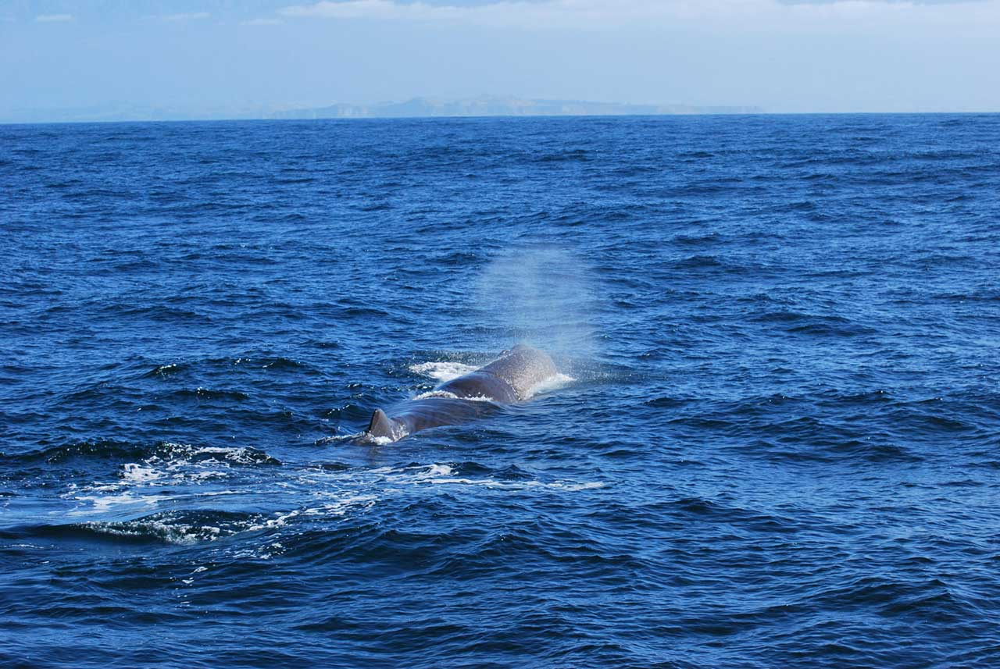

CHRISCHRUCH
La región de Christchurch-Canterbury se extiende desde las tierras de Mackenzie cerca del lago Tekapo hasta Kaikōura en el norte. Entre costas escarpadas y parques nacionales montañosos, nunca te quedarás sin opciones de cosas para hacer.

-
Ver el arte urbano de la ciudad de Christchurch
Después de los devastadores terremotos del año 2011, Christchurch fue reconstruida como un centro urbano más creativo y original. Pasear por las calles y admirar los coloridos murales que cuentan historias de la capacidad de recuperación y el indomable espíritu de la ciudad.
-
Observar las estrellas en el lago Tekapo
Las profundidades azules del lago Tekapo hacen que esta sea una parada irresistible en tu viaje por la región de Mackenzie. Asegúrate de salir por la noche para poder ver los espectacularmente despejados cielos y las brillantes estrellas.
 -
Recorrer el sendero Hooker Valley
El sendero Hooker Valley en el parque nacional Aoraki/Mount Cook es una de las mejores caminatas de medio día de la región. Podrás ver la cima de la montaña más alta de Nueva Zelanda, el monte Cook, frente a un lago glacial con icebergs dispersos.
-
Avistar ballenas en Kaikōura
Hacer una excursión en barco en Kaikōura para tener la oportunidad de ver cachalotes, orcas y delfines.
